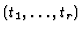
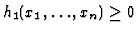
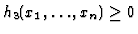
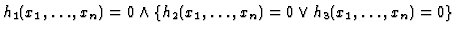
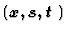
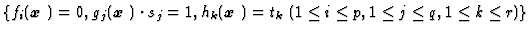

from Eq. (2), and finds out inconsistencies and new constraints according to the following criteria.
'', `` '' and ``
''.
'' is obtained.Figure 2 shows the geometrical meaning of this method of checking inconsistency. By introducing slack variables s and t, the surface defined by Eq. (1) in x-space is transformed to the surface defined by Eq. (2) and (3) in

-space. The condition that there exists inconsistency in Eq. (2) and (3) means that the surface defined by Eq. (2) does not pass through the region defined by Eq. (3). Thus, by projecting the surface defined by Eq. (2) in -space to t-space, the inconsistency in Eq. (2) and Eq. (3) can be checked.Polynomials consisting of are computed by constructing a reduction tree. At the initial state, a reduction tree is a tree whose nodes are Eq. (2). After that, each equation is regarded as a reduction rule which reduces [2] other equations, and new nodes are generated by applying the reduction rules according to the following procedures. In reduction, the slack variables t are given the lexicographically lower rank than any other variable. Figure 3 shows an example of a reduction tree.

and respectively. Then, a tree whose leaf nodes are equations in C is constructed.If an equation held at a node can be reduced by several equations in C whose head terms are prime to each other, only one equation of them is applied and only one child node is generated.
In order to improve computational efficiency, it should be avoided to generate same equations. This heuristics is based on the fact that the normal form [2] of an equation obtained by applying equations whose head terms are prime to each other is identical irrespective of the order of using these equations.
Variables appearing in an inequality are given the lowest rank next to the slack variables t, and the equation set is normalized by computing its Gröbner base.
A constraint interact with another constraint which has common variables. Figure 4 shows a constraint graph [1,3] which visually represents interrelationships between constraints. A constraint graph is defined as a bipartite graph whose nodes are classified into two groups: variable nodes and constraint nodes. A variable node is connected with constraint nodes in which the variable appears. Reductions are conducted between two constraint nodes connected with the common variable nodes. Thus, it is considered that if distances between inequality constraint nodes are short then equations consisting of t are efficiently obtained. This heuristics has an effect of transforming a constraint graph into the new one which has shorter distances between inequality constraint nodes.